我的世界1.81合成表大全(图文版)
我的世界(Minecraft)属于3D的第一人称和第三人称沙盒游戏，所呈现的世界并不是华丽的画面与特效，而是注重在游戏性上面。玩家在游戏中做着建设，破坏等等许多事，透过像乐高一样的积木来组合与拼凑，轻而易举的就能制作出小木屋、城堡甚至城市，但是若再加上玩家的想象力，天空之城、地底都市都一样能够实现。玩家不仅可以创造房屋建筑，甚至可以创造属于自己的都市和世界，玩家可以通过自己创造的作品来体验上帝一般的感觉。
我的世界1.81合成表大全(图文版)
基本合成
| 名称 | 材料 | 合成示意图 | 描述 |
| 木板 Wooden Planks |
原木 Wood |
基本的建筑材料. | |
| 木棍 Sticks |
木板 Wooden Planks |
 |
用来合成火把,弓箭,栅栏,木牌,工具和武器. |
| 火把 Torches |
煤碳和木棍 Coal & Stick |
 |
提供照明,避免刷怪,融化雪和冰块. |
| 工作台 Crafting Table |
木板 Wooden Planks |
 |
右键点击展开一个3X3的合成台. |
| 熔炉 Furnace |
圆石 Cobblestone |
用来烧制烹饪物品. | |
| 箱子 Chest |
木板 Wooden Planks |
 |
存放物品、迷路时暂存身上物品,两个箱子并排放可以增加存放空间. |
| 梯子 Ladders |
木棍 Sticks |
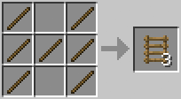 | 用来爬墙. |
| 栅栏 Fence |
木棍 Sticks |
不跨越栅栏,别墅内的隔栏(装饰品)、防止跌落. | |
| 船 Boat |
木板 Wooden Planks |
在水中行驶. | |
| 木质台阶 Wooden Slabs |
木板 Wooden Planks |
用于建造台阶、屋檐、窗台等. | |
| 石质台阶 Stone Slabs |
石头,砖,石砖,砂石,圆石,地狱砖,石英 Stone or Brick or Stone Brick or Sandstone or Cobblestone or Nether Brick or Quartz |
用于建造台阶、屋檐、窗台等. | |
| 告示牌 Sign |
木板和木棍 Wooden Planks & Stick |
 |
门牌、路标、告示牌、贴在楼梯两侧可组成沙发. |
| 门 Doors |
木板或者铁锭 Wooden Planks or Iron Ingots |
木门能够用手打开或者红石系统打开. 铁门只能用红石系统打开. |
方块合成
| 名称 | 材料 | 合成示意图 | 描述 |
| 萤石块 Glowstone |
萤石粉 Glowstone Dust |
 |
能够用于水下照明. |
| 雪块 Snow Block |
雪球 Snowballs |
建筑材料. | |
| TNT | 火药和沙子 Gunpowder & Sand |
 |
爆炸物. |
| 粘土块 Clay Block |
粘土 Clay |
 |
建筑材料. |
| 砖块 Brick Block |
红砖 Clay Bricks |
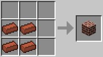 | 坚硬的建筑材料. |
| 书架 Bookshelf |
木板和书本 Wooden Planks & Books |
 |
装饰和附魔. |
| 沙石 Sandstone Block |
沙子 Sand |
 |
建筑材料. |
| 平滑沙石 Smooth Sandstone |
沙石 Sandstone Block |
 |
建筑材料. |
| 錾制 Decorative Sandstone |
沙质台阶 Sandstone Slabs |
 |
建筑材料. |
| 音符盒 Note Block |
木板和红石 Wooden Planks & Redstone |
 |
当点击时发出音符. |
| 南瓜灯 Jack-O Lantern |
南瓜和火把 Pumpkin & Torch |
光源. | |
| 青金石块 Lapis Lazuli Block |
青金石染料 Lapis Lazuli Dye |
存储青金石染料. | |
| 钻石块 Diamond Block |
钻石 Diamonds |
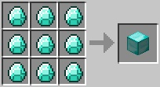 | 存储钻石. |
| 金块 Gold Block |
金锭 Gold Ingots |
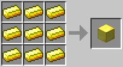 | 存储金锭. |
| 铁块 Iron Block |
铁锭 Iron Ingots |
 |
存储铁锭. |
| 绿宝石块 Emerald Block |
绿宝石 Emeralds |
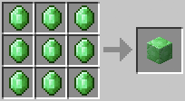 | 存储绿宝石. |
| 石砖 Stone Brick |
石头 Stone |
 |
建筑材料. |
| 木质楼梯 Wooden Stairs |
木板 Wooden Planks |
做楼梯. | |
| 石质楼梯 Stone Stairs |
圆石,沙,砖石,石砖,地狱砖,石英Cobblestone or Sandstone or Brick or Stone Brick or Nether Brick or Quartz | 做楼梯. | |
| 圆石墙 Cobblestone Wall |
圆石或者苔石 Cobblestone or Moss Stone |
 |
类似于栅栏的作用. |
| 红石块 Block of Redstone |
红石 Redstone |
红石电源. | |
| 地狱砖块 Nether Brick |
地狱砖 Nether Brick (Item) |
 |
建筑材料. |
| 石英块 Block of Quartz |
下界石英 Nether Quartz |
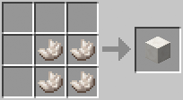 | 建筑材料. |
| 錾制石英块 Chiseled Quartz Block |
石英台阶 Quartz Slabs |
建筑材料. | |
| 竖纹石英块 Pillar Quartz Block |
石英块 Block of Quartz |
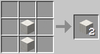 | 建筑材料. |
工具合成
| Name | Ingredients | Image | Description |
| 镐 Pickaxe |
木棍加木板或圆石或铁锭或金锭或钻石 Sticks & Wooden Planks or Cobblestone or Iron Ingots or Gold Ingots or Diamonds |
 |
挖方块和资源. |
| 斧头 Axes |
木棍加木板或圆石或铁锭或金锭或钻石 Sticks & Wooden Planks or Cobblestone or Iron Ingots or Gold Ingots or Diamonds |
 |
比用拳头砍树快. |
| 锹 Shovels |
木棍加木板或圆石或铁锭或金锭或钻石 Sticks & Wooden Planks or Cobblestone or Iron Ingots or Gold Ingots or Diamonds |
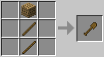 | 用来挖沙子,沙砾,图,草和雪. |
| 锄 Hoes |
木棍加木板或圆石或铁锭或金锭或钻石 Sticks & Wooden Planks or Cobblestone or Iron Ingots or Gold Ingots or Diamonds |
 |
用来锄地. |
| 钓鱼竿 Fishing Rod |
木棍和线 Sticks & String |
钓鱼. | |
| 打火石 Flint & Steel |
铁锭和燧石 Iron Ingot & Flint |
生火. | |
| 指南针 Compass |
铁锭和红石 Iron Ingots & Redstone |
 |
指向出生点. |
| 钟 Clock |
金锭和红石 Gold Ingots & Redstone |
 |
显示时间和白天黑夜. |
| 铁桶 Bucket |
铁锭 Iron Ingots |
 |
用来装水,岩浆,牛奶. |
| 剪刀 Shears |
铁锭 Iron Ingots |
 |
用来剪羊毛和树叶. |
防具合成
| 名称 | 材料 | 合成示意图 | 描述 |
| 头盔 Helmet |
皮革或铁锭或金锭或钻石 Leather or Iron Ingots or Gold Ingots or Diamonds |
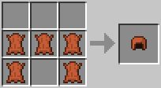 | 提供1.5护甲值（钻石）. |
| 胸甲 Chestplate |
皮革或铁锭或金锭或钻石 Leather or Iron Ingots or Gold Ingots or Diamonds |
 |
提供4点护甲值（钻石）. |
| 护腿 Leggings |
皮革或铁锭或金锭或钻石 Leather or Iron Ingots or Gold Ingots or Diamonds |
 |
提供3点护甲值（钻石）. |
| 靴子 Boots |
皮革或铁锭或金锭或钻石 Leather or Iron Ingots or Gold Ingots or Diamonds |
提供1.5点护甲值（钻石）. | |
| 剑 Sword |
木棍加上木板或圆石或铁锭或金锭或钻石 Sticks & Wooden Planks or Cobblestone or Iron Ingots or Gold Ingots or Diamonds |
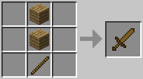 | 对怪物造成更多的伤害. |
| 弓 Bow |
线和木棍 String & Sticks |
 |
射箭. |
| 箭 Arrow |
燧石和木棍和羽毛 Flint & Stick & Feather |
 |
箭. |
道具合成
| 名称 | 材料 | 合成示意图 | 描述 |
| 压力版 Pressure Plates |
木板或石头 Wooden Planks or Stone |
有生物或玩家站在上面时会发出红石信号. | |
| 活板门 Trapdoor |
木板 Wooden Planks |
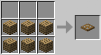 | 可以通过右键点击和红石打开. |
| 栅栏门 Fence Gate |
木板和木棍 Wooden Planks & Sticks |
可以像门一样被打开. | |
| 按钮 Button |
石头或者木板 Stone or Wooden Plank |
按下的时候发送一个短的红石信号. | |
| 拉杆 Lever |
木棍和圆石 Stick & Cobblestone |
 |
通过开关来控制红石信号的输出. |
| 中继器 Redstone Repeater |
石头,红石火把,红石和石头 Stone & Redstone Torch & Redstone |
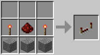 | 红石电路的二极管或者延时器. |
| 红石火把 Redstone Torch |
木棍和红石 Stick & Redstone |
 |
不间断发送红石信号. |
| 唱片机 Jukebox |
木板和钻石 Wooden Planks & Diamond |
 |
播发唱片. |
| 发射器 Dispenser |
圆石,弓和红石 Cobblestone & Bow & Redstone |
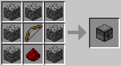 | 开启的适合发射物品. |
| 活塞 Piston |
木板,原始,铁锭和红石 Wooden Planks & Cobblestone & Iron Ingot & Redstone |
 |
推动方块. |
| 粘性活塞 Sticky Piston |
活塞和史莱姆球 Piston & Slime Ball |
推拉方块. | |
| 矿车 Minecart |
铁锭 Iron Ingots |
 |
在铁轨上行驶. |
| 动力矿车 Powered Minecart |
矿车和熔炉 Minecart & Furnace |
 |
烧碳来产生能量推动其他矿车前进. |
| 运输矿车 Storage Minecart |
矿车和箱子 Minecart & Chest |
通过铁路运送材料和物资. | |
| 铁轨 Rail |
铁锭和木棍 Iron Ingots & Stick |
铁轨. | |
| 充能铁轨 Powered Rail |
金锭,木棍和红石 Gold Ingots & Stick & Redstone |
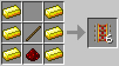 | 被激活的时候加速矿车. |
| 探测铁轨 Detector Rail |
铁锭,石质压力板和红石 Iron Ingots & Stone Pressure Plate & Redstone |
 |
矿车在其上面经过时产生红石信号. |
| 红石灯 Redstone Lamp |
红石和萤石块 Redstone & Glowstone Block |
 |
照明设施,需红石能量激活. |
| 绊线 Tripwire Hook |
铁锭,木棍和木板 Iron Ingot & Stick & Wooden Plank |
 |
通过时产生红石信号. |
| 激活铁轨 Activator Rail |
铁锭,木棍和红石火把 Iron Ingots & Sticks & Redstone Torch |
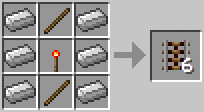 | 常用来激活TNT矿车和漏斗矿车. |
| 阳光传感器 Daylight Sensor |
玻璃,下界石英和木板 Glass & Nether Quartz & Wooden Slabs |
 |
拜托发出红石信号. |
| 投掷器 Dropper |
圆石和红石 Cobblestone & Redstone |
 |
扔出物品（类似发射器）. |
| 漏斗 Hopper |
铁锭和箱子 Iron Ingots & Chest |
 |
物品通过漏斗在箱子中移进或者移出. |
| 漏斗矿车 Minecart with Hopper |
漏斗和矿车 Hopper & Minecart |
 |
类似漏斗的功能. |
| TNT矿车 Minecart with TNT |
TNT和矿车 TNT & Minecart |
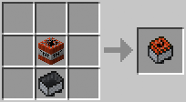 | 通过激活的铁道发生爆炸或者手动爆炸. |
| 红石比较器 Redstone Comparator |
红石火把,原始和下界石英 Redstone Torches & Stone & Nether Quartz |
 |
仅在红石电路中使用. |
| 陷进箱 Trapped Chest |
箱子和绊线 Chest & Tripwire Hook |
 |
打开箱子的适合发出红石信号. |
| 测重压力板 Weighted Pressure Plates |
铁锭或者金锭 Iron Ingots or Gold Ingots |
类似普通的压力板,但是只能用物品激活. 物品的数量绝对红石信号的强度. |
食物合成
| 名称 | 材料 | 合成示意图 | 描述 |
| 碗 Bowl |
木板 Wooden Planks |
 |
装蘑菇煲. |
| 蘑菇煲 Mushroom Stew |
碗,红蘑菇和棕色蘑菇Bowl & Red Mushroom & Brown Mushroom | 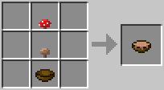 | 恢复4点饥饿值. |
| 面包 Bread |
小麦 Wheat |
 |
恢复2.5点饥饿值. |
| 金苹果 Golden Apple |
苹果和金粒 Apple & Gold Nuggets |
恢复2点饥饿值. | |
| 附魔金苹果 Enchanted Golden Apple |
苹果和金块 Apple & Gold Blocks |
恢复2点饥饿值. 同时给予30秒的抗火属性. | |
| 糖 Sugar |
甘蔗 Sugar Cane |
 |
用来制作蛋糕. |
| 蛋糕 Cake |
牛奶桶,汤,小麦和鸡蛋 Milk Buckets & Sugar & Wheat & Egg |
每块恢复1.5饥饿值,一共6块. | |
| 曲奇 Cookies |
小麦和可可豆 Wheat & Cocoa Beans |
 |
恢复1点饥饿值. |
| 西瓜 Melon Block |
西瓜片 Melon Slice |
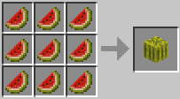 | 西瓜. |
| 西瓜种子 Melon Seeds |
西瓜片 Melon Slice |
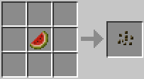 | 能够种植在耕地上. |
| 南瓜种子 Pumpkin Seeds |
南瓜 Pumpkin |
 |
能够种植在耕地上. |
| 金胡萝卜 Golden Carrot |
胡萝卜和金粒 Carrot & Gold Nuggets |
酿造原料,恢复3点饥饿值. | |
| 南瓜派 Pumpkin Pie |
南瓜,鸡蛋和糖 Pumpkin & Egg & Sugar |
 |
恢复4点饥饿值. |
其他合成
| 名称 | 材料 | 合成示意图 | 描述 |
| 床 Bed |
木板和羊毛 Wooden Planks & Wool |
 |
在晚上睡觉快速度过夜晚. |
| 画 Painting |
木棍和羊毛 Sticks & Wool |
装饰. | |
| 纸 Paper |
甘蔗 Sugar Cane |
 |
用来制造地图和书本. |
| 书 Book |
纸 Paper |
 |
用来制造书架和书与笔. |
| 书与笔 Book and Quill |
书,羽毛和墨囊 Book & Feather & Ink Sac |
 |
能够写文章. |
| 地图 Map |
纸和指南针 Paper & Compass |
 |
能够显示附近一块的地图. |
| 玻璃板 Glass Pane |
玻璃 Glass Blocks |
类似栅栏的窗格玻璃. | |
| 铁栏杆 Iron Bars |
铁锭 Iron Ingots |
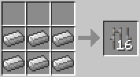 | 类似栅栏但是只有1个方块的高度. |
| 金锭 Gold Ingot |
金粒 Gold Nugget |
 |
用来制造其他东西. |
| 地狱砖栅栏 Nether Brick Fence |
地狱砖块 Nether Brick |
 |
类似普通的栅栏只不过原料不同. |
| 末影之眼 Eye of Ender |
末影珍珠和烈焰粉 Ender Pearl & Blaze Powder |
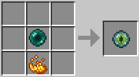 | 定位末地传送门. |
| 附魔台 Enchantment Table |
书,钻石和黑曜石 Book, Diamond & Obsidian. |
 |
用来附魔工具. |
| 火焰弹 Fire Charge |
烈焰粉,碳和火药 Blaze Powder & Coal & Gunpowder |
 |
能够通过发射器发射的火球. |
| 末影箱 Ender Chest |
黑曜石和末影之眼 Obsidian & Eye of Ender |
 |
用于储存. 所有末影箱共享一个物品栏. |
| 信标 Beacon |
玻璃,黑曜石和下界之心 Glass & Obsidian & Nether Star |
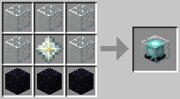 | 用于放置在钻石块，金块，绿宝石块或铁块（或这四种方块的任意组合）结构的金字塔顶端，可以向天空直射光束的功能型方块. |
| 铁@ Anvil |
铁块和铁锭 Iron Block & Iron Ingot |
 |
修复物品和合并附魔. |
| 花盆 Flower Pot |
红砖 Bricks |
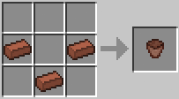 | 装饰. |
| 物品展示框 Item Frame |
木棍和皮革 Sticks & Leather |
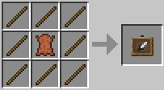 | 放在墙上展示物品和方块. |
| 萝卜钓竿 Carrot on a Stick |
钓竿和胡萝卜 Fishing Rod & Carrot |
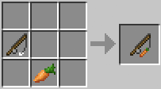 | 控制猪. |
| 烟花火箭 Firework Rocket |
火药,纸和烟火之星 Gunpowder & Paper & Firework Star |
 |
烟花. |
| 烟火之星 Firework Star |
火药,燃料和附加物品（可选） Gunpowder & Dye & an extra ingredient (optional) |
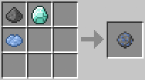 | 不同的烟火之星决定不同的烟花效果. |
染料合成
| 名称 | 材料 | 合成示意图 | 描述 |
| 骨粉 Bone Meal |
骨头 Bone |
用来使农作物树木快速长大. | |
| 淡灰色染料 Light Gray Dye |
骨粉和墨囊 Bonemeal & Ink Sac |
用于制作淡灰色羊毛. | |
| 灰色染料 Gray Dye |
骨粉和墨囊 Bonemeal & Ink Sac |
用于制作灰色羊毛. | |
| 玫瑰红 Rose Red |
玫瑰花 Rose |
用于制作红色羊毛. | |
| 橙色染料 Orange Dye |
玫瑰红和蒲公英黄 Rose Red & Dandelion Yellow |
用于制作橙色羊毛. | |
| 蒲公英黄 Dandelion Yellow |
蒲公英 Dandelion |
用于制作黄色羊毛. | |
| 黄绿色染料 Lime Dye |
仙人掌绿和骨粉 Cactus Green & Bone Meal |
用于制作黄绿色羊毛. | |
| 淡蓝色染料 Light Blue Dye |
青金石染料和骨粉 Lapis Lazuli Dye & Bone Meal |
用于制作淡蓝色羊毛. | |
| 青色染料 Cyan Dye |
青金石染料和仙人掌绿 Lapis Lazuli Dye & Cactus Green |
用于制作青色羊毛. | |
| 紫色染料 Purple Dye |
青金石染料和玫瑰红 Lapis Lazuli Dye & Rose Red |
用于制作紫色羊毛. | |
| 品红染料 Magenta Dye |
粉红色染料和紫色染料 Purple Dye & Pink Dye |
用于制作品红羊毛. | |
| 粉红色染料 Pink Dye |
骨粉和玫瑰红 Bone Meal & Rose Red |
用于制作粉红色羊毛. |
羊毛合成
| 名称 | 材料 | 合成示意图 | 描述 |
| 羊毛 Wool |
线 String |
 |
建筑材料能被染色. |
| 浅灰色羊毛 Light Gray Wool |
羊毛和浅灰色染料 Wool & Light Gray Dye |
 |
建筑和装饰材料. |
| 灰色羊毛 Gray Wool |
羊毛和灰色染料 Wool & Gray Dye |
 |
建筑和装饰材料. |
| 黑色羊毛 Black Wool |
羊毛和墨囊 Wool & Ink Sac |
建筑和装饰材料. | |
| 红色羊毛 Red Wool |
羊毛和玫瑰红 Wool & Rose Red |
建筑和装饰材料. | |
| 橙色羊毛 Orange Wool |
羊毛和橙色染料 Wool & Orange Dye |
建筑和装饰材料. | |
| 黄色羊毛 Yellow Wool |
羊毛和蒲公英黄 Wool & Dandelion Yellow |
 |
建筑和装饰材料. |
| 黄绿色羊毛 Lime Wool |
羊毛和黄绿色染料 Wool & Lime Dye |
 |
建筑和装饰材料. |
| 绿色羊毛 Green Wool |
羊毛和仙人掌绿 Wool & Cactus Green |
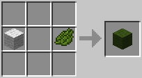 | 建筑和装饰材料. |
| 淡蓝色羊毛 Light Blue Wool |
羊毛和淡蓝色染料 Wool & Light Blue Dye |
 |
建筑和装饰材料. |
| 青色羊毛 Cyan Wool |
羊毛和青色染料 Wool & Cyan Dye |
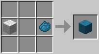 | 建筑和装饰材料. |
| 蓝色羊毛 Blue Wool |
羊毛和青金石染料 Wool & Lapis Lazuli Dye |
建筑和装饰材料. | |
| 紫色羊毛 Purple Wool |
羊毛和紫色染料 Wool & Purple Dye |
建筑和装饰材料. | |
| 品红色羊毛 Magenta Wool |
羊毛和品红色染料 Wool & Magenta Dye |
建筑和装饰材料. | |
| 粉红色羊毛 Pink Wool |
羊毛和粉红色染料 Wool & Pink Dye |
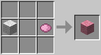 | 建筑和装饰材料. |
| 棕色羊毛 Brown Wool |
羊毛和可可豆 Wool & Cocoa Beans |
建筑和装饰材料. |
炼金合成
| 名称 | 材料 | 合成示意图 | 描述 |
| 玻璃瓶 Glass Bottle |
玻璃 Glass |
 |
用于酿造. |
| 炼药锅 Cauldron |
铁锭 Iron Ingot |
 |
填满玻璃瓶的水. |
| 酿造台 Brewing Stand |
烈焰棒和圆石 Blaze Rod & Cobblestone |
 |
用于酿造. |
| 烈焰粉 Blaze Powder |
烈焰棒 Blaze Rod |
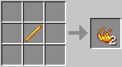 | 用于制造末影眼和岩浆膏. |
| 研究膏 Magma Cream |
史莱姆和烈焰粉 Slimeball & Blaze Powder |
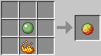 | 用于药剂制作. |
| 发酵蜘蛛眼 Fermented Spider Eye |
蜘蛛眼,棕色蘑菇和糖 Spider Eye, Brown Mushroom & Sugar |
 |
用于药剂制作. |
| 闪烁的西瓜 Glistering Melon |
西瓜片和金粒 Melon Slice & Gold Nugget |
用于药剂制作. |